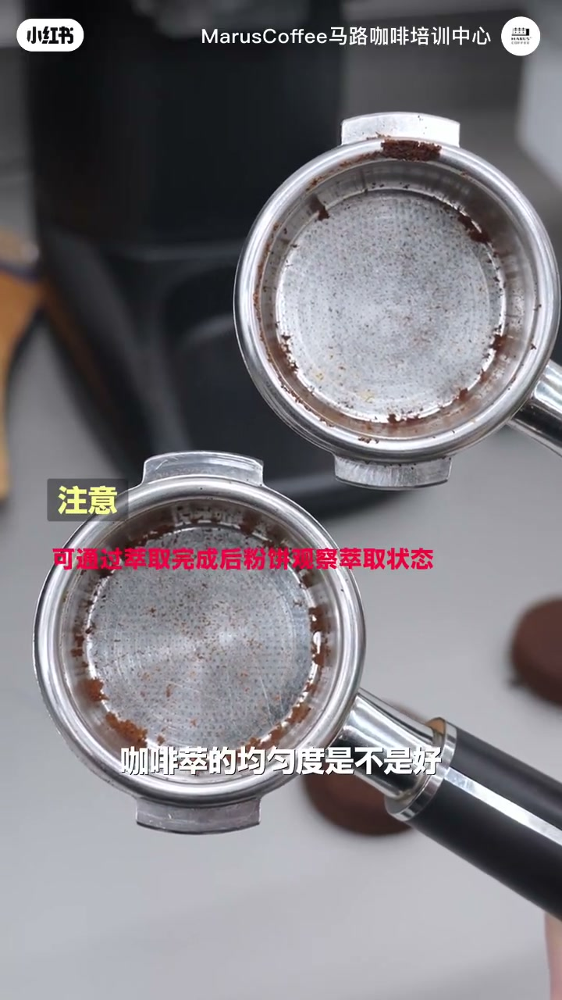
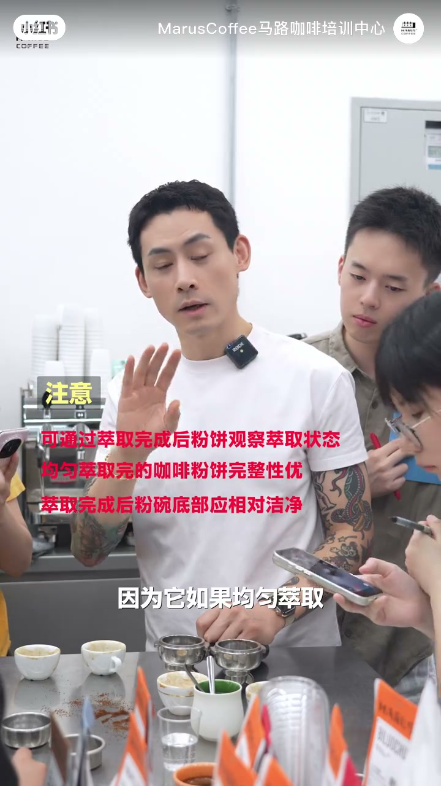
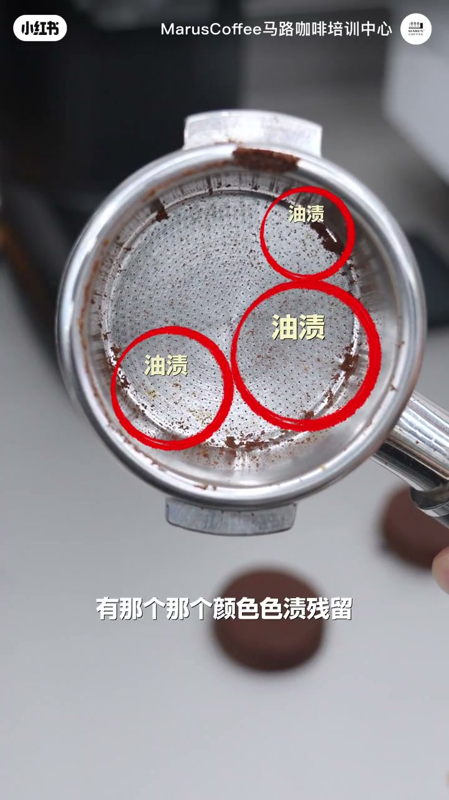
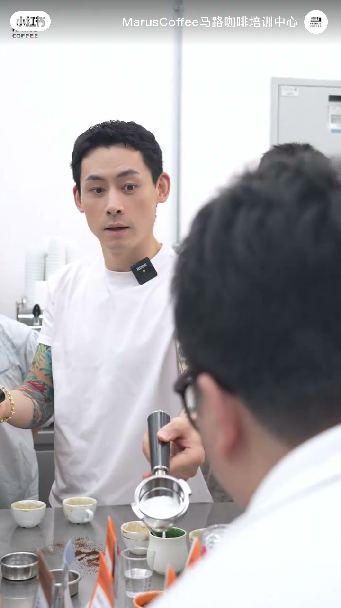
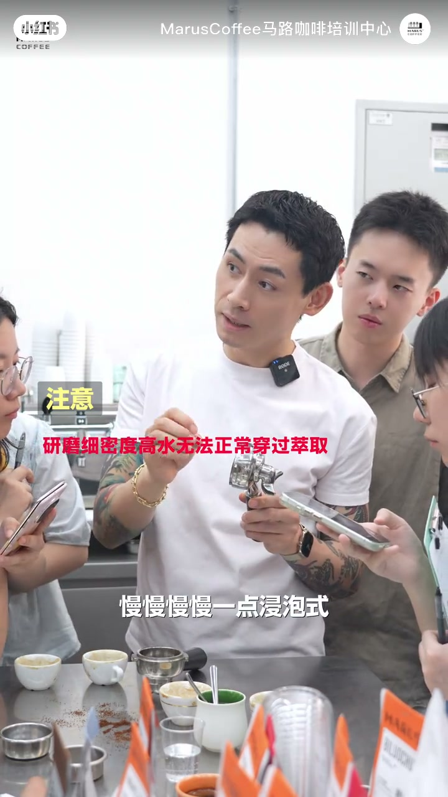
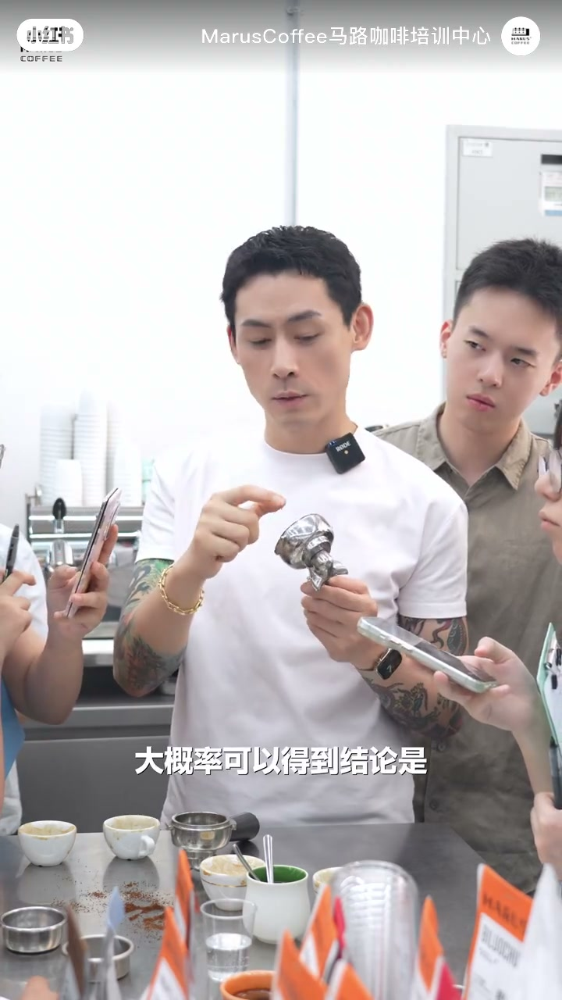

内容要点
马路咖啡意式课堂给出一个每日可做的自检：萃取结束后敲掉粉饼，那一瞬间粉碗的状态，能反映这杯咖啡萃取是否均匀。均匀时粉饼整体性好、粉碗底部颜色趋向洁净一致；若底部出现一块块油脂状色质残留，往往指向局部研磨过细、水流绕道、中间物质未萃尽的通道式不均匀。
知识结构
敲掉粉饼看粉碗：均匀萃取时粉饼整体性好，底部无颜色不均，被水冲刷后偏洁净或趋向一致。
当前粉碗底部有油脂状色质残留，且呈一块一块而非全覆盖；抛出原因思考。
局部过细→密度更高水穿不过→水从旁绕流、中间慢浸；结束时物质停在前段凝成油状；敲出粉饼常呈外淡中深。
均匀萃取的可读信号在粉碗：底部洁净一致、粉饼整体；油脂状斑块 + 外淡中深，多半是局部过细导致的通道绕流。参数到位时也别忽略粉饼反馈。
00:00-00:28每日一敲：粉碗状态反映均匀度
做完咖啡后敲掉粉饼，那一瞬间看到的粉碗状态，也可以反映这杯萃取均匀度好不好。若是很均匀的萃取：首先粉饼整体性很好；第二，粉碗底部不会有颜色不均匀——被水冲刷过后，应是比较洁净、或趋向一致的状态。


00:28-00:56反例：底部一块块油脂状残留
对照当前这只粉碗：萃取完后底部有颜色色质残留，看起来像有油脂的状态，而且不是全部都有，是一块一块的油。讲师停下来问：你们觉得这是什么原因？为什么这部分会像油脂一样？


00:56-01:39过细绕流：外淡中深的通道表现
答案指向刚才咖啡粉研磨太细：现在有颜色的这一块，密度会更高，水没有办法穿越它，大部分从旁边绕道流下去；中间这一部分慢慢一点点浸泡，滴答滴答。到萃取结束时，里面大部分物质仍未被萃出、停留在前段，所以油脂状的东西凝结在底部。
粉饼敲出去以后，大概率得到结论：周边这一圈是淡色的，中间这一个点是深色的——因为大部分物质还在里面。这就是萃取不均匀带来的表现。


完整转录（43段）
以下文本由 Whisper medium 模型自动转录，可能存在少量识别误差，已尽可能修正。
其实我们每天做完咖啡了以后
你挑掉的粉饼
那一瞬间你看到粉碗的状态
可以也反映出来
你这杯咖啡萃取的均匀度是不是好
如果是一个很均匀萃取的状态
咖啡萃取完了以后
首先你的粉饼整体性很好
第二呢
粉碗底部不会有颜色不均匀的情况出现
因为它如果均匀萃取被水冲刷过以后
它应该是一个比较洁净的状态
或者比较趋向于一致的状态
那现在我们看到这个粉碗萃取完了以后
因为我们先看嘛
我们看完这个粉碗萃取完了以后
粉碗底部有什么
有那个颜色色质残留
是不是像有油脂的状态一样
而且不是全部都有
是只有一块一块的油
对吧
你们觉得这是什么原因
大家想一想
为什么这个部分看起来会有像油脂一样的东西
嗯
就证明因为我们刚才咖啡粉研磨的太细了
现在有颜色的这一块
刚才的密度会更高一些
水没有办法穿越它
水从旁边大部分绕道流下去了
然后中间这一部分是慢慢一点
浸泡是滴答滴答滴答滴答滴答
所以到萃取结束的时候
它里面的大部分的物质仍然没有被萃取出来
停留在了前段
所以像油脂物一样的东西就凝结在了底部
粉饼敲出去了以后
大概率可以得到结论
是周边这一圈是淡色的
中间这一个点是深色的
因为大部分的物质还在里面
这就是萃取不均匀所带来的表现